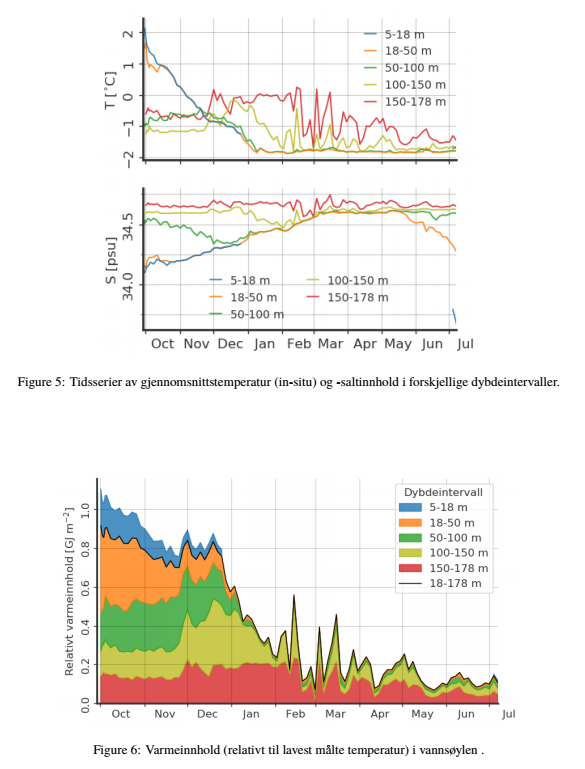

Torsdag 15.08 2019¶
Lesing: Barentshavet¶
Fullført mye av artikkelen om Barentshavet. Føler jeg har langt bedre oversikt nå. Har lånt boka Ecosystem Barents Sea, som ser ut til å ha fine intoduksjonskapitler om oseanografi og havis.
FjordEco-presentasjon¶
Satser på å presentere onsdag 18.09 11:00. Fint å ta utgangspunkt i disputas og legge til litt fra Amanda og Emily, etc (må i så fall bakes inn forsiktig..).
Oseanografi-lunsj¶
Har sagt ja til å ta ansvar for oseanografi-lunsj som er hver onsdag kl 12-13 i Polhavet-rommet. Ser ut til å være en ganske åpen arena for presentasjoner, diskusjoner, tokt, dataanalyse etc. Laura skal organisere den første lunsjen, så tar jeg over etter hvert.
ARGO¶
Utregninger av T og S i diskrete lag, samt varmeutrekninger. Kode i /argo_barents/code/explore/heat_content.py.
{kind=link}
Sjekk av verdi av varmeinnhold (for vann 1 grad varmere enn basis):
\(\rightarrow\) Tror dette kan stemme fint.
I morgen¶
Jobb videre med ARGO-dokumentet. Mål: send til Arild fredag.
Les ATWAIN-artikkel.
Jobb videre med A-TWAIN - kartlegg hvilke data som er tilgjengelige, og om det er noe overlapp med ARGO-datasettet.
Send introduksjonsmelding på Yammer.
Sett opp kalender.
Les toktplan.
Les abstracts for alle papers jeg fikk fra Arild.
Ta kontakt med økonomi ang DFØ-kjøret.